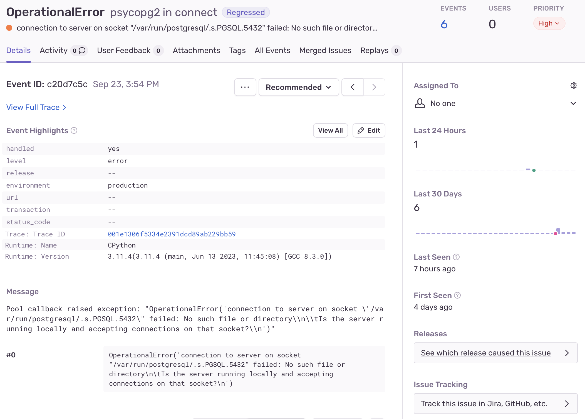

Deploying A Basic Django Site using Ansible
Published on September 24, 2024 | Last updated on September 24, 2024
In this post I describe deploying a simple Django based web application using Ansible into a production environment for use as an online storefront for a small business.
Background
When I'm not building the new internet, I am also working on a number of other projects and businesses to support myself. One of these is a small online store selling spiritual themed clothing. For this store, I need a basic website that allows people to buy clothing. I could use a one of many online e-commerce platforms, but I want complete control over the site and features, and am choosing to build it from scratch.
The store will be built using Django, and accept payments through Stripe.
This project will be a good learning experience, and also demonstrate how the "legacy" method of deploying applications can be improved.
The Plan
"Human" Objectives
I like starting all projects with some idea of what "success" looks like. For this project, success means:
- The online store for this business is up and running well
- I have a well-written document describing the process
- I know what went well, and what can be improved
Some of these words are pulling a lot of weight. Notably, the phrase "running well" can mean many things.
I define it as:
- People can buy shirts successfully
- The website does not go down
- If it does go down, I will know about it, and can fix it easily
- I can make changes easily without worrying about breaking anything
Technical Objectives
At the end of this endeavor, I'll have created a fully functioning system that is easy to change and maintain. It will be self-contained, and not require me to remain engaged with expert-level focus.
I can distill much of what I've learned through the years to: automate everything. By automating everything, I have to explicitly document every step in the form of the "code" that does the automation. This forces me to not let anything slip through the cracks, like a one-off hack I find on stack overflow, or that password I set manually, or file permission I needed to change in a panic.
At the end of this I project I will have:
- A folder full of python code that is the core Django web application
- A Docker container for the application containing a working Django application
- A docker container for an
nginxproxy for serving static files - Secure management of secrets such as API keys and database passwords
- A deployment of these containers to real servers, in "the cloud" and physically at home
- Tools to monitor the running website
- Tools to automate all aspects of the deployment
Assumptions
I will assume that I (or you the reader) has a fully functioning Django application that follows best practices.
Specifically, I will assume:
- The Django application does not have any esoteric requirements, and can easily be run locally with
manage.py runserver - The application does not have and hard-coded keys, credentials, etc, and instead loads these from the operating systems environment
- The application does not serve static files directly. These will be served either by a simple web server
- The application has logging and error handling setup. Notably, I like using Sentry to monitor and keep tabs on my application
In addition, I will assume:
- This site will be deployed to "The Cloud". I will be deploying to Digital Ocean
- The site will use an external load balancer that will handle SSL termination. I will again use one from Digital Ocean
- The site will use a managed database hosted by the cloud provider
With these assumptions out of the way, let's get started!
If you'd like to learn more about Deploying Django, check out the resources:
Architectural Overview
Here is my go-to architecture for small, low-traffic sites:
- Frontend load balancer provided by a cloud hosting provider
- One or more containerized applications, running Django, with an
nginxreverse proxy in front of them handling static files. These are orchestrated usingdocker compose. - Managed database provided by cloud hosting provider
- Ansible playbook to set everything up
I'll describe the steps I take below in greater detail. This isn't intended to be a tutorial, just a rough overview.
Steps
1. Do the Annoying Manual Steps First
I like getting something working quickly to get momentum going. For this step, I'll go ahead and do the manual steps needed to deploy a site.
- Ensure you have a domain name. I like getting mine from Gandi
- Provision a "Droplet" in Digital Ocean. Configure it to use an SSK key. See How to Create a Droplet for more information
- Provision a Load Balancer in Digital Ocean. Specifically, I configure it to terminate SSL, and automatically get new certificates from Let's Encrypt automatically. This is easy if you manage your domain in Digital Ocean
- Connect to your Droplet and do the bare minimum to host something. I like just using
python3 http.server 80in a folder with a simpleindex.html. You may also want to make ahealthdirectory with anotherindex.htmlin it so that Digital Ocean will consider this server "healthy." - Configure the Digital Ocean firewall so the web server box is only accessible on port 80 via the load balancer, and your home IP address on port 22 for ssh. Verify you can still SSH into the box, and cannot access it directly via HTTP, while it is still accessible through the load balancer.
Having done this, I can verify the load balancer and SSL termination are working, and can move on to deploying a working site.
2. Setup a Staging Environment
If you want to go ahead and deploy straight to "production", skip this step. I find it very useful to have an environment that is very similar to how I will run the app in production, and use this to test.
In my case, I have my own custom nginx load balancer, and I setup to SSL terminate and reverse proxy staging.example.com
Alternatively, you can spin up another Digital Ocean droplet, and repeat the manual steps with the staging environment.
3. Consider Secret Management
For this site, there are a handful of secrets and configuration values. I keep the non-sensitive ones stored directly in version control, and the sensitive ones encrypted and stored in an Ansible Vault file.
My Django application itself does not store any secrets, but loads them from Environment Variables
A Django project loads its runtime settings by importing a Django settings module. This is a python file with various global variables that are used by other parts of the application.
I have actually created three separate settings modules, abase a local and a production. The local and production modules import the base module, which contains settings that do not change between environments.
The local and production modules both use the python-dotenv package to load settings from environment variables.
For example, my local.py settings module begins like this:
from dotenv import load_dotenv
load_dotenv()
from .base import *
DEBUG = True
ALLOWED_HOSTS = ['*']
STATIC_URL = '/static/'
DATABASES = {
'default': {
'ENGINE': 'django.db.backends.sqlite3',
'NAME': f'{SITE_NAME}.sqlite',
}
}
Setting Environment Variables at Runtime
To set environment variables at runtime, the python-dotenv looks for a .env file in the current working directory, and if it finds one, sets all the described environment variables. For development, I (semi) manually maintain a .env file.
For production, I create a .env file during the build process from a template file, and copy it to the production server during the deployment phase. Prior to creating the container, the container runtime (in this case Docker with Docker Compose) loads the the .env file and sets the environment variables directly. This avoids having to mount the .env file in the Docker container, and removes one Python dependency.
I am currently debating whether I want to forego the python-dotenv library altogether, and use a different tool to load the .env on my development system.
SECRET_KEY={{django_secret_key}}
DEBUG=False
POSTGRES_PORT=5432
POSTGRES_HOST=db
POSTGRES_USER={{postgres_user}}
POSTGRES_PASSWORD={{postgres_password}}
POSTGRES_DB={{postgres_db}}
DJANGO_SETTINGS_MODULE={{site_prefix}}.settings.production
ALLOWED_HOSTS={{allowed_hosts}}
ADMIN_USERNAME=admin
ADMIN_PASSWORD={{django_admin_password}}
ADMIN_EMAIL={{admin_email}}
EMAIL_HOST={{email_host}}
EMAIL_PORT={{email_port}}
EMAIL_USE_TLS={{email_use_tls}}
EMAIL_HOST_USER={{email_host_user}}
EMAIL_PASSWORD={{email_password}}
STRIPE_API_KEY={{stripe_api_key}}
STRIPE_PUB_KEY={{stripe_pub_key}}
4. Containerize Application including Static File Hosting
I will deploy this application as a Docker Container. I am choosing deploy this as a "containerized workload" because I value the determinism and isolation it gives me. Once I create a Docker image, it will run just about the same anywhere, and won't have (much) unintended behavior due to how other services on the server are configured.
Also, if I'd like to scale up the application, I can simply deploy more containers to more VMs and not have to worry about manual configuration.
I won't write more about the values of containers, but suffice it to say, after many years of resisting, and crying out "Have operating systems really failed at their key goal of being a platform to run multiple software applications?", I have decided to embrace the the value they provide, and save my criticism of operating systems for a future discussion.
To "containerize" an application, I consider a few things:
- What operating system is required to run the software?
- What dependencies does it need?
- Does it need other services running? Can and should these be containerized as well?
- What data from the "outside" will the application need? These are settings that will likely live in a
.envfile.
Once I answer these questions, I whip up a Dockerfile that pulls in a good base operating system, and populate the file with all the steps necessary to install the dependencies that are needed, excluding any services that I will run in different containers.
A Dockerfile is kind of like a basic shell script that runs a bunch of commands on container, and allows copying between containers. It differs from a traditional shell script in many ways, a notable one being that each step is potentially cached. Keeping that in mind, I typically arrange my Dockerfile so most expensive things happen first on their own lines, and fast things that change often are later on in the file, so as I rebuild the image, most of the early steps can be skipped and retrieved from cache.
Here is my Dockerfile for this application:
###########
# Builder #
###########
# pull official base image
FROM python:3.11.4-slim-buster as builder
# set work directory
WORKDIR /usr/src/app
# set environment variables
ENV PYTHONDONTWRITEBYTECODE=1
ENV PYTHONUNBUFFERED=1
# install system dependencies
RUN apt-get update && \
apt-get install -y --no-install-recommends gcc
# install python dependencies
COPY ./frozen-reqs.txt .
RUN pip wheel --no-cache-dir --no-deps --wheel-dir /usr/src/app/wheels -r frozen-reqs.txt
##############
# Main Image #
##############
# pull official base image
FROM python:3.11.4-slim-buster
# create directory for the app user
RUN mkdir -p /home/app
# create the app user
RUN addgroup --system app && adduser --system --group app
# create the appropriate directories
ENV HOME=/home/app
ENV APP_HOME=/home/app/rev
RUN mkdir -p $APP_HOME/staticfiles $APP_HOME/mediafiles $APP_HOME/logs
WORKDIR $APP_HOME
# install dependencies
RUN apt-get update && apt-get install -y --no-install-recommends netcat ffmpeg
COPY --from=builder /usr/src/app/wheels /wheels
COPY --from=builder /usr/src/app/frozen-reqs.txt .
RUN pip install --upgrade pip
RUN pip install --no-cache /wheels/*
# install nodejs
ENV NODE_VERSION=20.11.0
ENV NVM_DIR=$HOME/.nvm
# Install curl and nvm
RUN apt-get update && apt-get install -y curl && \
curl -o- https://raw.githubusercontent.com/nvm-sh/nvm/v0.40.1/install.sh | bash
# Install Node.js using nvm
RUN . "$NVM_DIR/nvm.sh" && nvm install ${NODE_VERSION} && \
. "$NVM_DIR/nvm.sh" && nvm use ${NODE_VERSION} && \
. "$NVM_DIR/nvm.sh" && nvm alias default ${NODE_VERSION}
# Update PATH
ENV PATH="$NVM_DIR/versions/node/v${NODE_VERSION}/bin:$PATH"
# copy project
COPY . $APP_HOME
# Create log directory and set permissions
RUN mkdir -p /home/app/logs && chmod -R 755 /home/app/logs
RUN chown -R app:app /home/app/logs
WORKDIR $APP_HOME/store/frontend
RUN npm install
WORKDIR $APP_HOME
# Ensure log directory is writable
RUN chmod -R 755 $APP_HOME/logs
RUN sed -i 's/\r$//g' $APP_HOME/entrypoint.prod.sh
RUN chmod +x $APP_HOME/entrypoint.prod.sh
RUN chmod +x $APP_HOME/migrate.sh
# chown all the files to the app user
RUN chown -R app:app $APP_HOME
# change to the app user
USER app
# run entrypoint.prod.sh
ENTRYPOINT ["/home/app/rev/entrypoint.prod.sh"]
There is a basic entrypoint script that waits for Postgres to be happy before continuing. This avoids a few error messages if the web server comes up first.
# entypoint.prod.sh
#!/bin/sh
if [ "$DATABASE" = "postgres" ]
then
echo "Waiting for postgres..."
while ! nc -z $SQL_HOST $SQL_PORT; do
sleep 0.1
done
echo "PostgreSQL started"
fi
exec "$@"
There is much to learn about Dockerfiles, including techniques to optimize both the build time, and the final image size. I may take some time to optimize image size later, which is typically done by purging a bunch of files after the work is done, or using multiple images, one to build the application, and another to be the runtime host of it, that doesn't have all the build dependencies.
In the above file, one optimization I'd like to make is to not include node in the final image. However, I need it since building the frontend bundle happens during the migration. I will improve this in the future, and copy the optimized bundle into the image, and not bundle node with it.
Static File Hosting
Django sites in production typically do not serve "static" files whose content does not change during runtime. Static files are primarily images, css, Javascript and and any other static content. In a Django site, these are added manually to the project, or are the result of compiling a frontend bundle of Javascript, css and more into production bundles.
I typically serve static files from an nginx server deployed as another container in front of Django. For a high traffic site, it may make sense to copy static files to a CDN or object store like S3.
To set this up, I create an extremely simple Dockerfile
FROM nginx:1.25
RUN rm /etc/nginx/conf.d/default.conf
COPY nginx.conf /etc/nginx
The nginx.conf for this container is as follows:
worker_processes 1;
events {
worker_connections 1024;
}
http {
include /etc/nginx/mime.types;
default_type application/octet-stream;
gzip on;
gzip_types text/plain text/css application/json application/javascript text/xml application/xml application/xml+rss text/javascript;
gzip_proxied any;
gzip_vary on;
upstream django {
server web:8000;
}
server {
listen 80;
location / {
proxy_pass http://django;
proxy_set_header X-Forwarded-For $proxy_add_x_forwarded_for;
proxy_set_header Host $host;
proxy_redirect off;
}
location /static/ {
alias /home/app/{{ app_prefix }}/staticfiles/;
}
location /media/ {
alias /home/app/{{ app_prefix }}/mediafiles/;
}
# Add health check endpoint
location /health/ {
access_log off;
return 200 'healthy';
add_header Content-Type text/plain;
}
}
}
The main things of not here are
- Proxy configuration. Location
/passes all traffic to Django, and sets some headers. - Static configuration.
/static/serves files directly from/home/app/{{ app_prefix }}. The important part here is to copy the static files to the right location prior to running the app - A health check
I'll write about copying files to the right location in later steps.
Django static files in Production
Surprise Subsection: Using Docker Compose
In order to manage the Django application and nginx reverse proxy as a single unit, I use Docker Compose Docker Compose allows me to bring up a few containers together, configure how network traffic passes between them, and mount shared directories between containers.
For static files hosting, the important part is to copy all the static files to a folder (volume in Docker lingo) that is accessible to the nginx container.
Rather than explain all the details, here is my docker-compose.yaml template, edited slightly for brevity.
version: '3.8'
services:
web:
image: {{image_name}}
command: gunicorn {{site_prefix}}.wsgi:application --bind 0.0.0.0:8000 --workers 5 --threads 2
volumes:
- static_volume:/home/app/{{site_prefix}}/staticfiles
- media_volume:/home/app/{{site_prefix}}/mediafiles
- logs_volume:/home/app/{{site_prefix}}/logs
env_file:
- .env
healthcheck:
test: ["CMD", "curl", "-f", "http://localhost:8000/health/"]
interval: 30s
timeout: 10s
retries: 3
expose:
- 8000
depends_on:
- db
- migration
db:
image: postgres:15
volumes:
- postgres_data:/var/lib/postgresql/data/
env_file:
- .env
nginx:
image: {{nginx_image}}
container_name: {{site_prefix}}-nginx
volumes:
- static_volume:/home/app/{{site_prefix}}/staticfiles
- media_volume:/home/app/{{site_prefix}}/mediafiles
ports:
- {{nginx_port}}:80
restart: unless-stopped
depends_on:
- web
migration:
image: {{image_name}}
volumes:
- static_volume:/home/app/{{site_prefix}}/staticfiles
- media_volume:/home/app/{{site_prefix}}/mediafiles
command: ./migrate.sh
env_file:
- .env
depends_on:
- db
volumes:
postgres_data:
static_volume:
media_volume:
logs_volume:
Some important things to notice:
- There are volumes defined for postgres, static files, media files, logs. The static files volume is shared by the migration container and the nginx container.
- All of them use the same
.envfile.
I will discuss migrations next
5. Setup Migrations
Django has built in support for database migrations. In essence, when you change the database layout in code, it is necessary to update the actual database and potentially migrate any data from the old layout to the new one.
As migrations need to happen before the new application is deployed, I run an ephemeral container every time I push an upgrade. It will connect to the database, and run migrations, and also copy static files to the appropriate place for nginx to host them.
The ephemeral container is another instance of the main image, with a custom entrypoint script:
#!/bin/sh
#!/bin/bash
cd frontend && npm install && npm run build
cd ..
python manage.py collectstatic --noinput
python manage.py migrate --noinput
6. Build Docker Images for Production
To build a docker image for production, simply run the following command:
docker build . -t username/image-name:latest
docker push username/image-name:latest
This can also be done in an automated environment like Drone CI. In this case, rather than running the command directly, you use a plugin.
kind: pipeline
type: docker
name: default
trigger:
branch:
- staging
- production
event:
- push
- pull_request
steps:
- name: build main docker image
image: plugins/docker
settings:
context: rev
username:
from_secret: dockerhub_username
password:
from_secret: dockerhub_password
repo: {{ image_name }}-${DRONE_BRANCH}
dockerfile: rev/Dockerfile
cache_from: {{ image_name }}-${DRONE_BRANCH}
tags:
- latest
when:
changeset:
- {{ site_prefix }}/Dockerfile
- {{ site_prefix }}/**/*
- name: build nginx docker image
image: plugins/docker
settings:
context: nginx
username:
from_secret: dockerhub_username
password:
from_secret: dockerhub_password
repo: {{ image_name }}-nginx-${DRONE_BRANCH}
dockerfile: nginx/Dockerfile
cache_from: {{ image_name }}-nginx-${DRONE_BRANCH}
tags:
- latest
when:
changeset:
- nginx/Dockerfile
- nginx/**/*
- name: run ansible playbook
image: ${username}/ansible:latest
environment:
SSH_KEY:
from_secret: ssh_key_${DRONE_BRANCH}
ANSIBLE_HOST_KEY_CHECKING: "False"
ANSIBLE_VAULT_PASSWORD:
from_secret: ansible_vault_password_${DRONE_BRANCH}
commands:
- mkdir -p /root/.ssh
- export APP_ENV=${DRONE_BRANCH}
- echo "$${SSH_KEY}" > /root/.ssh/id_ed25519_ansible
- chmod 600 /root/.ssh/id_ed25519_ansible
- echo "$${ANSIBLE_VAULT_PASSWORD}" > /tmp/vault_password
- ansible-playbook --inventory playbooks/inventories/${DRONE_BRANCH} --vault-password-file /tmp/vault_password playbooks/playbook.yml --tags "staging,ingress" -vv
---
kind: secret
name: dockerconfig
get:
path: docker
name: config
For more info see Setting up Continuous Integration using Drone CI
7. Create Ansible Playbook to Automate Deployment
Now that I've done just about everything except actually deploy the site, I'll discuss the "one last final step" of setting up Ansible. Ansible is a collection of software for automating the installation, management, maintenance and upgrades on collections of computers. It's main strength is that it supports just about any kind of configuration task through plugins, and a frustratingly complete programming environment implemented in YAML.
Ansible effectively creates a giant "state" data structure by parsing a huge collection of files, running plugins, and taking actions. As it builds up this state, it may take actions that update the state of remote servers to ideally configure them to be in a corresponding state to that of the Ansible files. However, despite having the goal of being declarative, Ansible is inherently more procedural language, so making effective "playbooks" in Ansible lingo is a bit tricky.
The way I approach Ansible is as follows:
Establish Connectivity to Hosts and create Inventory(s)
Ansible operates on an "inventory" of computers that it applies "roles" to will running "playbooks." I describe this in some depth in the article Personal Infrastructure Part 1: Introduction and Basic Ansible Setup.
Once I can ping all the hosts, I go ahead and make a dumb "role" to see if thing work at all. Typically I'll run echo $env and verify the hosts are running commands and picking up the correct variables.
Role to Deploy Site
Next I create a simple Ansible role to deploy the site. This role assumes a few things:
- There is an
env.j2template file that defines all environment variables need at runtime in terms of Ansible facts - There is a similar
compose.yaml.j2that becomes the finaldocker-compose.ymlfile for production - Docker images are available to pull from Dockerhub. See section 7 of this article for more information
- name: Deploy site
become: true
block:
- name: Create project directory
ansible.builtin.file:
path: "/opt/containers/ansible/{{ site_name }}"
state: directory
mode: '0755'
recurse: true
become: true
- name: Copy Docker Compose template
ansible.builtin.template:
src: "{{ playbook_dir }}/templates/compose.yaml.j2"
dest: "/opt/containers/ansible/{{ site_name }}/docker-compose.yml"
mode: '0644'
become: true
- name: Create .env file from template
ansible.builtin.template:
src: "{{ playbook_dir }}/templates/.env.j2"
dest: "/opt/containers/ansible/{{ site_name }}/.env"
mode: '0600'
become: true
- name: Pull Docker images
community.docker.docker_compose_v2:
project_src: "/opt/containers/ansible/{{ site_name }}"
files:
- "docker-compose.yml"
pull: always
state: present
become: true
- name: Start Docker containers
community.docker.docker_compose_v2:
project_src: "/opt/containers/ansible/{{ site_name }}"
files:
- "docker-compose.yml"
state: present
pull: always
become: true
7. Configure logging and Error Reporting
I typically like error reporting in my production applications. For that I use sentry For a Django project, this is as simple as including this in my settings.py module:
import sentry_sdk
sentry_sdk.init(
dsn="https:/some-long-code.my-sentry-domain.com/5,
# Set traces_sample_rate to 1.0 to capture 100%
# of transactions for performance monitoring.
traces_sample_rate=1.0,
)
Now when there is an issue, I can see it via a beautiful web interface, configure alerts and more.

Conclusion
This is a rough overview of one method of deploying a small Django site to production in Digital Ocean. It hand-waves over a lot of the nasty iteration that is present in many of these steps. I present them like "you just make this file and it all works", whereas in reality, I maybe spent 10 hours editing a file, running a build command, waiting 2-5 minutes, observing a failure, and trying again. I hope this post helps you avoid some of the same mistakes I made.
Lessons Learned
I made a few mistakes that I'm aware of, and likely more that I am not aware of. I'll document some of the more annoying ones here so you may avoid making similar mistakes.
- Using a
.envfile that is expected to be in the same directory as the Django application. This means that I need to "mount" it at runtime, which is annoying - Not using variables for more parts of scripts and config files. I copied and pasted some of the files from earlier projects. I spent a large amount of time chasing down incorrect configuration stemming from copy paste mistakes
- Not using sane default values for variables. There are some config values that have sane default values that rarely need to change. If I don't run Postgres on a non-standard port, I shouldn't need to worry about that variable
- Using Ansible at all. Although I get a lot of value from Ansible, it's a slow and painful experience to work on. Even with lots of helpful tools, like an Ansible linter, and LLMs helping me write code, it leaves a lot to be desired. I could write a whole criticism of Ansible, and maybe I will in the future.
- Have fun! I've had the most fun when I'm not feeling rushed to finish an article. A little work every day makes progress, even if it's slow at times.
This post took more words, and simultaneously covered less ground than I had hoped. If you're interested in any particular aspect of it, please don't hesitate to reach out. I'm open to writing another article or two on any aspects that anyone finds particularly interesting.